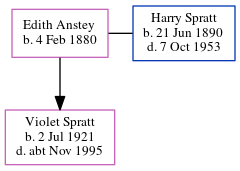

Edith Spratt (née Anstey) 1880 -
[ Home ] | [ Calendar ] | [ Surnames Index ] | [ Errors ] | [ Family History ]Edith Anstey, the wife of Harry Dale Spratt (the great-uncle of Nigel Horne), was born on 4 Feb 18801 and married Harry (a carter with whom she had 1 child, Violet Lilian) at All Saints Church, Westbrook, Kent, England on 22 Nov 19132. On 29 Sept 1939, she was living at 1 Hill View Cottages, Twenties, Shottendane Road, Margate, Kent1.
Children
- Violet Lilian was born on 2 Jul 1921
Citations
- 1939 Register - Findmypast (was the wife of the head of the household)
- England & Wales, FreeBMD Marriage Index: 1837-1915 Online publication - Provo, UT, USA: The Generations Network, Inc., 2006.Original data - General Register Office. England and Wales Civil Registration Indexes. London, England: General Register Office. © Crown copyright. Published by permission of the Cont
Media
England & Wales marriages 1837-2008 - BMD/M/1913/4/AZ/000021/037
1939 Register Transcription - TNA-R39-1752-1752G-016-24
Family Tree
Map
Generated by ged2site. Last updated on Jul 3, 2024
Known Issues
Date of birth is known, but not place